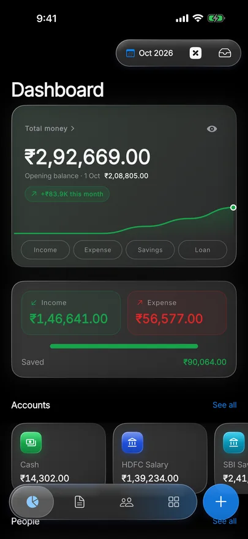
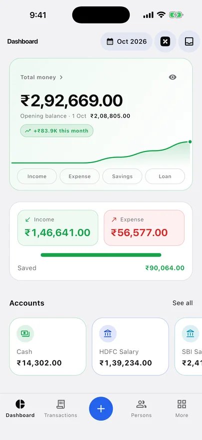
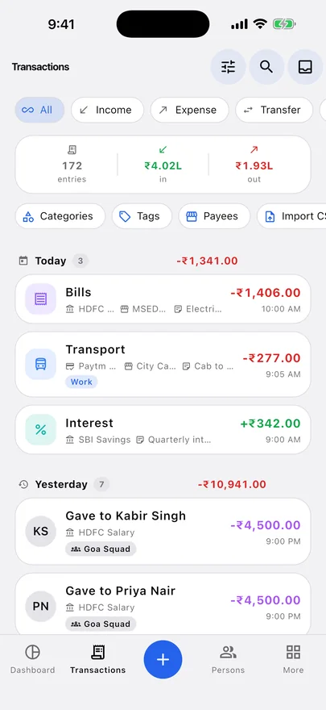
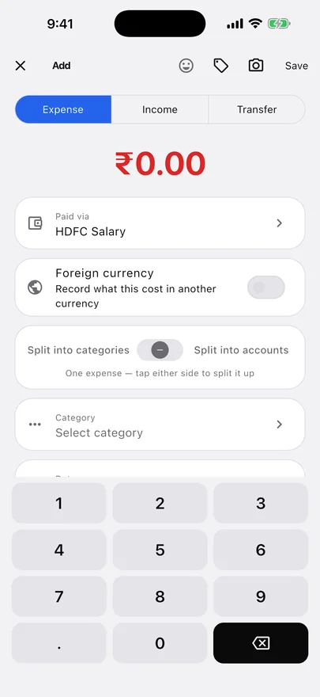
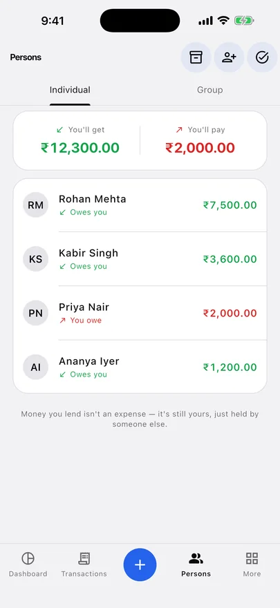
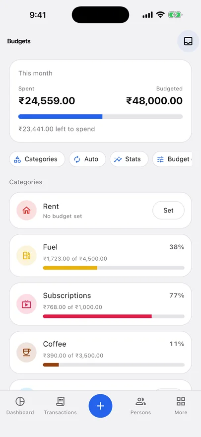
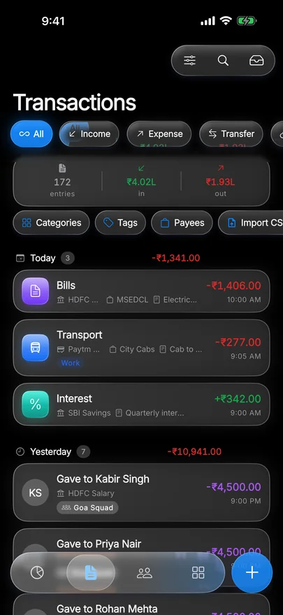

Real screens from the iPhone app, with sample data. Tap one to see it full size.
https://xpenc.in/ios/source.json
The buttons work on an iPhone that already has SideStore or AltStore. If nothing happens, copy the address and add it in the app under Sources → +.
First time
- Install SideStore or AltStore. Both are free, and need a computer once, for setup.
- On your iPhone, tap Add to SideStore or Add to AltStore above.
- Open the XPENC source and install XPENC.
- Keep it refreshed. With a free Apple ID, sideloaded apps stop opening after 7 days; SideStore and AltStore sign them again when you refresh — XPENC and your data stay put.
Or download the .ipa
Using another sideloading tool? Install the app file directly. It's unsigned on purpose, so the tool signs it with your own Apple ID. To update, install the newer file the same way, with the same Apple ID — XPENC updates in place and your data stays.
The latest release, the same version as on Android. Every release lists the file's
SHA-256 in SHA256SUMS.txt so you can check your download.
Good to know
- A free Apple ID can keep 3 sideloaded apps active at a time, and some sideloading tools count as one.
- Back up somewhere safe. On iPhone, backups are kept inside XPENC, so deleting the app deletes them too. Share a backup to Files or iCloud Drive to keep a copy — the same file restores on Android, and the other way round.
- Not here yet: home screen widgets, sharing a message or screenshot into XPENC, reading payment screenshots, and blocking screenshots. Everything else is the same app.
- Still private: XPENC makes no network requests on iPhone either. Your data stays in the app's own storage on your phone.
Something wrong?
This is the first iOS version, so tell us what breaks: GitHub issues or feedback.yashpatil@gmail.com.